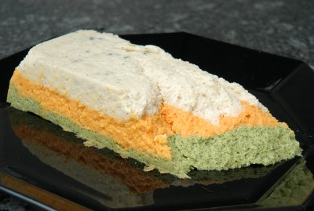

| Zutaten für 4 Personen: | |
| 250 g | Blumenkohl |
| 1.5 dl | Vollmilch |
| 3 | Eier |
| 30 g | Butter |
| Muskatnuss | |
| 250 g | Rüebli |
| Koriander | |
| 1 Prise | Zucker |
| 250 g | Broccoli |
| 1 El | Reibkäse |
| Butter für die Form | |
Blumenkohl, Rüebli und Broccoli getrennt kochen.
Die Form ausbuttern.
Blumenkohl mit 0.5dl Milch, 1 Ei, 10g Butter, Pfeffer, Muskat und wenig Salz pürieren und in die Form füllen. Klopfen, dass mit keine Luft eingeschlossen wird.
Rüebli mit 0.5dl Milch, 1 Ei, 10g Butter, Koriander, Zucker und wenig Salz pürieren und in die Form füllen.
Broccoli mit 0.5dl Milch, 1 Ei, 10g Butter, 1El Reibkäse, Pfeffer und wenig Salz pürieren und in die Form füllen.
Die Terrine mit einem Deckel oder einem Stück Alufolie zudecken. In ein Wasserbad stellen und im Ofen bei rund 180°C etwa 90 Minuten garen.
Gemüseterrine als Vorspeise mit verschiedenen Vollkornbrötchen servieren.
Eine Zeitung
Schmeckt ganz gut. Auf dem Foto sieht man wie das kommt, wenn die Terrine an der Form klebt. RE 10.1.2010
Etwas seht ähnliches scheint die Gemüsemousse-Terrine in "Betty Bossi - Vielseitige Gemüseküche" Seite 38 zu sein.
@LINKBACK_TAG@ @WAKELOCK@